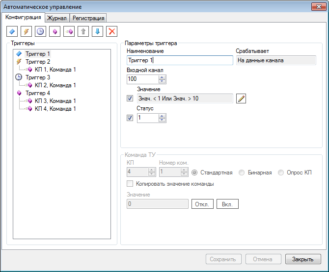

.
.Модуль автоматического управления позволяет в автоматическом режиме отправлять команды при выполнении определённых условий. Без регистрации модуль работает в демонстрационном режиме с ограничением времени полнофункциональной работы 10 минут после перезапуска.Модуль подключается к программе SCADA-Сервер. Настройка модуля выполняется с помощью удобной формы, показанной на следующем рисунке.

Условия, необходимые для отправки команд, задаются в виде триггеров, которые бывают нескольких типов:
Для каждого триггера создаётся набор команд ТУ, которые отправляются при его срабатывании. Информацию о срабатывании триггеров и отправленных командах можно получить на странице Журнал или напрямую из файла ModAutoControl.log, который находится в директории журналов Сервера, по умолчанию C:\SCADA\ScadaServer\Log
Модуль автоматического управления устанавливается в соответствии с общей последовательностью установки модулей Сервера. Файл библиотеки модуля - ModAutoControl.dll. После подключения модуля необходимо выполнить несколько дополнительных действий:
.